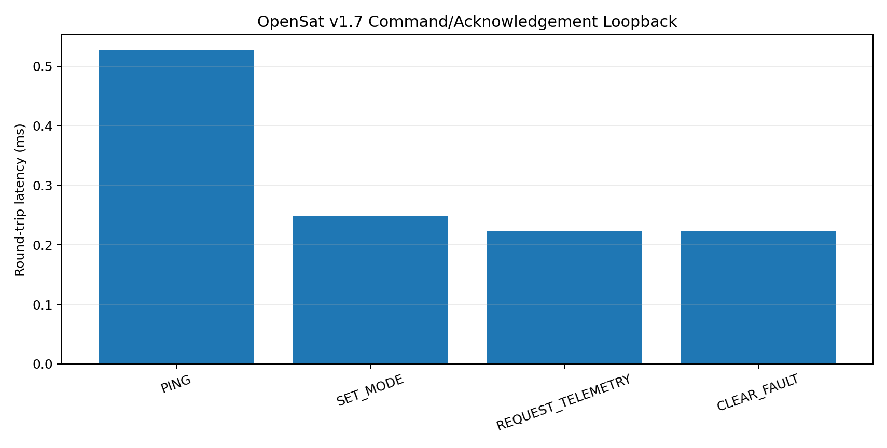

OpenSat Mission Lab v1.7
Home-Lab Hardware Bridge Validation
PASS
CRC-protected OSML-CMD/1 commands and OSML-ACK/1 acknowledgements
Commands
4
4
Accepted
4
4
Maximum latency
0.526 ms
0.526 ms

Hardware paths
Use hil-serial-replay for telemetry, hil-serial-listen for captures, and hil-command-send --transport serial for command/acknowledgement tests with an ESP32 or Raspberry Pi gateway.
Scope: Local protocol validation is not electrical qualification, real-time certification, radiation testing, or flight acceptance.